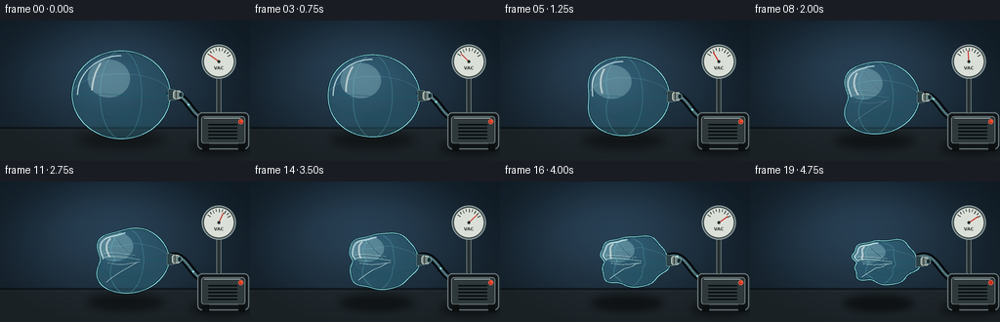
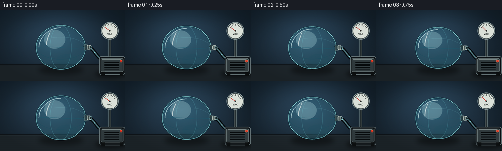
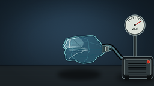

CODING AGENTS AS PIXEL WORLD MODELS
traex/GPT-5.6-Sol · phygen_018
点击播放 · 原生 RGB 像素
逐轮保存的候选
回放视频、检查图与代码变化。
每份候选均可单独播放。实际图片检查记录在下方工具轨迹中。
候选 01播放与检查图
点击播放 · 原生 RGB 像素


展开代码变化
--- 上一保存版本
+++ 本次保存版本
@@ -0,0 +1,315 @@
+from pathlib import Path
+import math
+import numpy as np
+from PIL import Image, ImageDraw, ImageFilter, ImageFont
+import artifact_io
+
+W, H, N = 256, 144, 20
+S = 4
+WS, HS = W*S, H*S
+
+
+def sc(v):
+ return int(round(v*S))
+
+
+def smooth(x, a=0.0, b=1.0):
+ if b == a:
+ return float(x >= b)
+ z = np.clip((x-a)/(b-a), 0.0, 1.0)
+ return float(z*z*(3-2*z))
+
+
+def wrapped_delta(a, b):
+ return (a-b+math.pi) % (2*math.pi) - math.pi
+
+
+def gauss_angle(a, center, sigma):
+ d = wrapped_delta(a, center)
+ return math.exp(-0.5*(d/sigma)**2)
+
+
+def shape_params(p):
+ # The shell first resists, then buckles in a few visibly discrete stages.
+ buckle1 = smooth(p, .10, .43)
+ buckle2 = smooth(p, .32, .70)
+ crush = smooth(p, .56, 1.0)
+ cx = 124.0 + 7.2*p
+ cy = 76.0 + 5.8*p
+ rx = 50.2 * (1.0 - .205*p)
+ ry = 45.0 * (1.0 - .37*p - .07*crush)
+ return cx, cy, rx, ry, buckle1, buckle2, crush
+
+
+def radial_factor(a, p):
+ cx, cy, rx, ry, b1, b2, crush = shape_params(p)
+ # A large left-wall cave-in, followed by top and lower-wall buckles.
+ r = 1.0
+ r -= (.020*p + .405*b1) * gauss_angle(a, math.pi, .48)
+ r -= (.205*b2) * gauss_angle(a, -1.82, .34)
+ r -= (.155*crush) * gauss_angle(a, 1.80, .32)
+ r -= (.100*crush) * gauss_angle(a, 2.42, .20)
+ # Wrinkling appears only after most air has left.
+ r += crush * (.045*math.sin(6*a+0.5) + .027*math.sin(10*a-1.1))
+ # Keep the valve side comparatively supported by the rigid fitting.
+ r += .018*b2*gauss_angle(a, 0.0, .26)
+ return max(.37, r)
+
+
+def map_ball(u, v, p):
+ cx, cy, rx, ry, *_ = shape_params(p)
+ a = math.atan2(v, u)
+ rr = radial_factor(a, p)
+ return (cx + rx*u*rr, cy + ry*v*rr)
+
+
+def ball_polygon(p, count=360):
+ pts=[]
+ for j in range(count):
+ a=2*math.pi*j/count
+ pts.append((sc(map_ball(math.cos(a), math.sin(a), p)[0]),
+ sc(map_ball(math.cos(a), math.sin(a), p)[1])))
+ return pts
+
+
+def bezier(p0,p1,p2,p3,n=80):
+ out=[]
+ for q in np.linspace(0,1,n):
+ z=1-q
+ x=z**3*p0[0]+3*z*z*q*p1[0]+3*z*q*q*p2[0]+q**3*p3[0]
+ y=z**3*p0[1]+3*z*z*q*p1[1]+3*z*q*q*p2[1]+q**3*p3[1]
+ out.append((sc(x),sc(y)))
+ return out
+
+
+def draw_background(frame_index):
+ y,x=np.mgrid[0:HS,0:WS]
+ yy=y/S
+ xx=x/S
+ # Cool laboratory wall, softly illuminated behind the specimen.
+ light=np.exp(-(((xx-116)/105)**2+((yy-47)/66)**2))
+ base=np.zeros((HS,WS,3),dtype=np.float32)
+ base[:,:,0]=15+22*light+8*(yy/H)
+ base[:,:,1]=26+34*light+10*(yy/H)
+ base[:,:,2]=35+44*light+12*(yy/H)
+ # faint deterministic film grain prevents a sterile flat background
+ rng=np.random.default_rng(1000+frame_index)
+ grain=rng.normal(0,0.8,(HS,WS,1))
+ base=np.clip(base+grain,0,255).astype(np.uint8)
+ im=Image.fromarray(base,'RGB')
+ d=ImageDraw.Draw(im,'RGBA')
+ # Wall/table division and brushed worktop.
+ d.rectangle((0,sc(110),WS,HS), fill=(30,38,43,255))
+ d.rectangle((0,sc(109),WS,sc(111)), fill=(8,13,17,160))
+ d.line((0,sc(112),WS,sc(112)),fill=(105,124,126,38),width=sc(.5))
+ for k in range(7):
+ yy0=sc(118+k*4.1)
+ d.line((0,yy0,WS,yy0),fill=(125,142,140,9),width=sc(.35))
+ # Soft vignette.
+ vig=Image.new('L',(WS,HS),0)
+ va=np.array(vig,dtype=np.float32)
+ nx=(x-WS/2)/(WS/2); ny=(y-HS/2)/(HS/2)
+ va=np.clip((nx*nx+ny*ny-.35)*42,0,35).astype(np.uint8)
+ shade=Image.new('RGBA',(WS,HS),(0,0,0,0)); shade.putalpha(Image.fromarray(va))
+ im=Image.alpha_composite(im.convert('RGBA'),shade)
+ return im
+
+
+def draw_pump_and_hose(im, p, frame_index):
+ d=ImageDraw.Draw(im,'RGBA')
+ # Pump/table shadow.
+ sh=Image.new('RGBA',(WS,HS),(0,0,0,0)); sd=ImageDraw.Draw(sh,'RGBA')
+ sd.ellipse((sc(194),sc(121),sc(258),sc(139)),fill=(0,0,0,110))
+ sh=sh.filter(ImageFilter.GaussianBlur(sc(4)))
+ im.alpha_composite(sh)
+ d=ImageDraw.Draw(im,'RGBA')
+ # Hose behind specimen, heavy black rubber with a blue reflected edge.
+ hose=bezier((171.5,77.2),(192,70),(194,99),(211,101),100)
+ d.line(hose, fill=(2,6,8,230), width=sc(7), joint='curve')
+ d.line(hose, fill=(56,86,94,170), width=sc(3.2), joint='curve')
+ d.line(hose, fill=(106,151,157,80), width=sc(.8), joint='curve')
+ # Flow glints travel toward the pump while evacuation is active.
+ active=1-smooth(p,.86,1.0)
+ if active>0:
+ for q0 in [(.12+frame_index*.105)%1, (.52+frame_index*.105)%1]:
+ q=min(.96,max(.04,q0))
+ idx=int(q*(len(hose)-1))
+ x0,y0=hose[idx]
+ r=sc(1.1)
+ d.ellipse((x0-r,y0-r,x0+r,y0+r),fill=(139,224,231,int(150*active)))
+ # Vacuum pump casing.
+ d.rounded_rectangle((sc(202),sc(94),sc(255),sc(132)),radius=sc(5),fill=(17,22,25,255),outline=(102,117,120,170),width=sc(1.2))
+ d.rounded_rectangle((sc(206),sc(98),sc(251),sc(126)),radius=sc(3),fill=(47,57,60,255),outline=(128,143,143,100),width=sc(.8))
+ # casing highlight and vents
+ d.line((sc(209),sc(100),sc(246),sc(100)),fill=(183,198,195,80),width=sc(.8))
+ for k in range(5):
+ yy=sc(106+k*3.5)
+ d.rounded_rectangle((sc(213),yy,sc(243),yy+sc(1.25)),radius=sc(.5),fill=(7,11,13,180))
+ d.ellipse((sc(244),sc(101),sc(249),sc(106)),fill=(199,45,32,255),outline=(255,123,86,180),width=sc(.5))
+ d.rectangle((sc(207),sc(126),sc(214),sc(134)),fill=(12,15,16,255))
+ d.rectangle((sc(244),sc(126),sc(251),sc(134)),fill=(12,15,16,255))
+ # Gauge stem and dial.
+ d.rounded_rectangle((sc(221.4),sc(54),sc(226.6),sc(95)),radius=sc(2),fill=(39,48,50,255),outline=(119,137,137,180),width=sc(.7))
+ gc=(224,42); gr=16
+ d.ellipse((sc(gc[0]-gr-1.5),sc(gc[1]-gr-1.5),sc(gc[0]+gr+1.5),sc(gc[1]+gr+1.5)),fill=(9,13,15,245),outline=(145,162,163,200),width=sc(1.2))
+ d.ellipse((sc(gc[0]-gr),sc(gc[1]-gr),sc(gc[0]+gr),sc(gc[1]+gr)),fill=(218,224,216,255),outline=(75,86,86,255),width=sc(1))
+ # Gauge ticks.
+ for k in range(9):
+ ang=math.radians(145-k*(115/8))
+ r1=11.6 if k%2 else 10.5
+ r2=14.0
+ d.line((sc(gc[0]+r1*math.cos(ang)),sc(gc[1]-r1*math.sin(ang)),
+ sc(gc[0]+r2*math.cos(ang)),sc(gc[1]-r2*math.sin(ang))),fill=(37,44,43,230),width=sc(.65))
+ # Needle sweeps toward high vacuum.
+ val=smooth(p,.02,.92)
+ ang=math.radians(145-112*val)
+ ex=gc[0]+11.3*math.cos(ang); ey=gc[1]-11.3*math.sin(ang)
+ d.line((sc(gc[0]),sc(gc[1]),sc(ex),sc(ey)),fill=(198,39,31,255),width=sc(1.1))
+ d.ellipse((sc(gc[0]-1.4),sc(gc[1]-1.4),sc(gc[0]+1.4),sc(gc[1]+1.4)),fill=(40,45,43,255))
+ # tiny but legible dial marking
+ try:
+ font=ImageFont.truetype('/usr/share/fonts/truetype/dejavu/DejaVuSans-Bold.ttf',sc(4.5))
+ except Exception:
+ font=None
+ d.text((sc(219),sc(46)),"VAC",font=font,fill=(42,48,46,220))
+
+
+def draw_ball(im,p,frame_index):
+ poly=ball_polygon(p)
+ mask=Image.new('L',(WS,HS),0); md=ImageDraw.Draw(mask)
+ md.polygon(poly,fill=255)
+ # Ground shadow flattens and darkens as the shell collapses.
+ cx,cy,rx,ry,b1,b2,crush=shape_params(p)
+ shadow=Image.new('RGBA',(WS,HS),(0,0,0,0)); shd=ImageDraw.Draw(shadow,'RGBA')
+ shd.ellipse((sc(cx-rx*.91),sc(112+4*p),sc(cx+rx*.92),sc(132+2*p)),fill=(0,0,0,int(105+30*p)))
+ shadow=shadow.filter(ImageFilter.GaussianBlur(sc(5-1.4*p)))
+ im.alpha_composite(shadow)
+
+ # Transparent blue-green polymer, with thickness increasing in folds.
+ y,x=np.mgrid[0:HS,0:WS]
+ xx=x/S; yy=y/S
+ edge=np.array(mask,dtype=np.float32)/255.0
+ glow=np.exp(-(((xx-(cx-14))/34)**2+((yy-(cy-20))/25)**2))
+ lower=np.clip((yy-cy)/(max(ry,1))*0.5+0.5,0,1)
+ rgba=np.zeros((HS,WS,4),dtype=np.uint8)
+ rgba[:,:,0]=np.clip(50+25*glow+10*lower,0,255)
+ rgba[:,:,1]=np.clip(125+54*glow+12*lower,0,255)
+ rgba[:,:,2]=np.clip(147+65*glow+16*lower,0,255)
+ rgba[:,:,3]=np.clip(edge*(58+25*lower+18*p),0,125).astype(np.uint8)
+ im.alpha_composite(Image.fromarray(rgba,'RGBA'))
+
+ # Broad inner glow, clipped to shell.
+ sheen=Image.new('RGBA',(WS,HS),(0,0,0,0)); sd=ImageDraw.Draw(sheen,'RGBA')
+ sd.ellipse((sc(cx-rx*.68),sc(cy-ry*.80),sc(cx+rx*.18),sc(cy+ry*.06)),fill=(207,248,247,64))
+ sd.ellipse((sc(cx-rx*.18),sc(cy+ry*.30),sc(cx+rx*.70),sc(cy+ry*.82)),fill=(21,79,94,35))
+ sheen.putalpha(Image.composite(sheen.getchannel('A'),Image.new('L',(WS,HS),0),mask))
+ im.alpha_composite(sheen)
+
+ # Deformed construction seams reveal the original hollow sphere and its collapse.
+ seams=Image.new('RGBA',(WS,HS),(0,0,0,0)); d=ImageDraw.Draw(seams,'RGBA')
+ def mapped_line(uvs,fill,width):
+ pts=[]
+ for u,v in uvs:
+ px,py=map_ball(u,v,p); pts.append((sc(px),sc(py)))
+ d.line(pts,fill=fill,width=sc(width),joint='curve')
+ # equatorial seam
+ uvs=[]
+ for u in np.linspace(-.985,.985,150):
+ v=.03*math.sin(math.pi*u) + .01
+ uvs.append((u,v))
+ mapped_line(uvs,(21,92,112,135),.85)
+ mapped_line([(u,-.48*math.sqrt(max(0,1-u*u))) for u in np.linspace(-.99,.99,140)],(134,222,226,72),.55)
+ mapped_line([(u,.53*math.sqrt(max(0,1-u*u))) for u in np.linspace(-.99,.99,140)],(14,77,94,105),.7)
+ # Two curved longitudinal seams.
+ for k,alpha in [(-.43,80),(.42,67)]:
+ uv=[]
+ for v in np.linspace(-.99,.99,150):
+ u=k*math.sqrt(max(0,1-v*v))
+ uv.append((u,v))
+ mapped_line(uv,(109,212,218,alpha),.65)
+ seams.putalpha(Image.composite(seams.getchannel('A'),Image.new('L',(WS,HS),0),mask))
+ im.alpha_composite(seams)
+
+ # Sharp radial wrinkles fan out from buckled regions late in the timelapse.
+ wrinkle=Image.new('RGBA',(WS,HS),(0,0,0,0)); wd=ImageDraw.Draw(wrinkle,'RGBA')
+ wa=int(150*b2)
+ if wa>3:
+ crease_specs=[
+ [(-.83,-.08),(-.48,-.18),(-.08,-.06),(.34,.02)],
+ [(-.76,-.24),(-.46,-.30),(-.10,-.18),(.23,-.11)],
+ [(-.65,.16),(-.38,.24),(-.02,.16),(.33,.08)],
+ [(-.32,-.82),(-.18,-.52),(.04,-.30),(.16,-.06)],
+ [(-.47,.72),(-.27,.48),(.03,.27),(.27,.10)],
+ ]
+ for j, ctrl in enumerate(crease_specs):
+ pts=[]
+ # cubic in normalized shell coordinates
+ for q in np.linspace(0,1,50):
+ z=1-q
+ u=z**3*ctrl[0][0]+3*z*z*q*ctrl[1][0]+3*z*q*q*ctrl[2][0]+q**3*ctrl[3][0]
+ v=z**3*ctrl[0][1]+3*z*z*q*ctrl[1][1]+3*z*q*q*ctrl[2][1]+q**3*ctrl[3][1]
+ px,py=map_ball(u,v,p); pts.append((sc(px),sc(py)))
+ wd.line(pts,fill=(231,255,252,int(wa*(.80 if j%2 else 1))),width=sc(.75),joint='curve')
+ off=[(x+sc(1.1),y+sc(.7)) for x,y in pts]
+ wd.line(off,fill=(4,53,67,int(wa*.72)),width=sc(.65),joint='curve')
+ wrinkle.putalpha(Image.composite(wrinkle.getchannel('A'),Image.new('L',(WS,HS),0),mask))
+ im.alpha_composite(wrinkle)
+
+ # Glossy shell highlights.
+ hi=Image.new('RGBA',(WS,HS),(0,0,0,0)); hd=ImageDraw.Draw(hi,'RGBA')
+ # top-left reflection follows mapped points
+ arc=[]
+ for a in np.linspace(math.radians(203),math.radians(282),80):
+ # PIL angles differ; directly use upper-left shell angles around pi to 1.5pi
+ pass
+ pts=[]
+ for a in np.linspace(math.pi,1.50*math.pi,90):
+ rr=.89
+ px,py=map_ball(rr*math.cos(a),rr*math.sin(a),p); pts.append((sc(px),sc(py)))
+ hd.line(pts,fill=(226,255,253,175),width=sc(1.25),joint='curve')
+ # narrow reflected strip
+ pts=[]
+ for q in np.linspace(-.72,-.10,45):
+ u=-.60*math.sqrt(max(0,1-q*q)); v=q
+ px,py=map_ball(u,v,p);pts.append((sc(px),sc(py)))
+ hd.line(pts,fill=(255,255,250,150),width=sc(1.7),joint='curve')
+ hi.putalpha(Image.composite(hi.getchannel('A'),Image.new('L',(WS,HS),0),mask))
+ im.alpha_composite(hi)
+
+ # Double shell boundary sells thin transparent plastic.
+ d=ImageDraw.Draw(im,'RGBA')
+ d.line(poly+[poly[0]],fill=(8,47,61,235),width=sc(2.1),joint='curve')
+ d.line(poly+[poly[0]],fill=(159,235,235,170),width=sc(.75),joint='curve')
+
+ # Sealed rigid valve and clamp in front of shell.
+ # Its position tracks the supported rightmost wall.
+ vx,vy=map_ball(1,0,p)
+ d.polygon([(sc(vx-2),sc(vy-6)),(sc(vx+5),sc(vy-5)),(sc(vx+6),sc(vy+5)),(sc(vx-2),sc(vy+6))],
+ fill=(43,65,70,255),outline=(176,205,201,210))
+ d.rounded_rectangle((sc(vx+3),sc(vy-4.2),sc(vx+11),sc(vy+4.2)),radius=sc(2),fill=(117,132,129,255),outline=(223,232,221,220),width=sc(.8))
+ d.line((sc(vx+6),sc(vy-4),sc(vx+6),sc(vy+4)),fill=(31,39,39,200),width=sc(.7))
+ d.ellipse((sc(vx+8.2),sc(vy-3.0),sc(vx+13.2),sc(vy+3.0)),fill=(27,43,47,255),outline=(130,175,179,220),width=sc(.8))
+
+
+def render(i):
+ # Slightly front-loaded time-lapse progression, with every frame distinct.
+ p=(i/(N-1))**0.93
+ im=draw_background(i)
+ draw_pump_and_hose(im,p,i)
+ draw_ball(im,p,i)
+ # Small status lamp on pump subtly pulses while running.
+ d=ImageDraw.Draw(im,'RGBA')
+ if i<18:
+ alpha=int(130+70*(.5+.5*math.sin(i*1.8)))
+ d.ellipse((sc(246.0),sc(102.0),sc(248.0),sc(104.0)),fill=(255,90,52,alpha))
+ im=im.convert('RGB').resize((W,H),Image.Resampling.LANCZOS)
+ return np.asarray(im,dtype=np.uint8)
+
+
+def main():
+ frames=np.stack([render(i) for i in range(N)],axis=0)
+ artifact_io.save(frames,Path(__file__).resolve().parent)
+
+
+if __name__=='__main__':
+ main()
可观测工具轨迹
实际执行的命令与返回图片。
命令 1exit 0
/bin/bash -lc "cat prompt.txt && printf '\\n--- GENERATION_RULES.md ---\\n' && cat GENERATION_RULES.md"
命令 2exit 0
/bin/bash -lc "cat task_spec.json && printf '\\n--- FILES ---\\n' && find . -maxdepth 2 -type f -printf '%p\\n' | sort"
命令 3exit 0
/bin/bash -lc 'cat artifact_io.py'
命令 4exit 0
/bin/bash -lc "cat > generate.py <<'PY'
from pathlib import Path
import math
import numpy as np
from PIL import Image, ImageDraw, ImageFilter, ImageFont
import artifact_io
W, H, N = 256, 144, 20
S = 4
WS, HS = W*S, H*S
def sc(v):
return int(round(v*S))
def smooth(x, a=0.0, b=1.0):
if b == a:
return float(x >= b)
z = np.clip((x-a)/(b-a), 0.0, 1.0)
return float(z*z*(3-2*z))
def wrapped_delta(a, b):
return (a-b+math.pi) % (2*math.pi) - math.pi
def gauss_angle(a, center, sigma):
d = wrapped_delta(a, center)
return math.exp(-0.5*(d/sigma)**2)
def shape_params(p):
# The shell first resists, then buckles in a few visibly discrete stages.
buckle1 = smooth(p, .10, .43)
buckle2 = smooth(p, .32, .70)
crush = smooth(p, .56, 1.0)
cx = 124.0 + 7.2*p
cy = 76.0 + 5.8*p
rx = 50.2 * (1.0 - .205*p)
ry = 45.0 * (1.0 - .37*p - .07*crush)
return cx, cy, rx, ry, buckle1, buckle2, crush
def radial_factor(a, p):
cx, cy, rx, ry, b1, b2, crush = shape_params(p)
# A large left-wall cave-in, followed by top and lower-wall buckles.
r = 1.0
r -= (.020*p + .405*b1) * gauss_angle(a, math.pi, .48)
r -= (.205*b2) * gauss_angle(a, -1.82, .34)
r -= (.155*crush) * gauss_angle(a, 1.80, .32)
r -= (.100*crush) * gauss_angle(a, 2.42, .20)
# Wrinkling appears only after most air has left.
r += crush * (.045*math.sin(6*a+0.5) + .027*math.sin(10*a-1.1))
# Keep the valve side comparatively supported by the rigid fitting.
r += .018*b2*gauss_angle(a, 0.0, .26)
return max(.37, r)
def map_ball(u, v, p):
cx, cy, rx, ry, *_ = shape_params(p)
a = math.atan2(v, u)
rr = radial_factor(a, p)
return (cx + rx*u*rr, cy + ry*v*rr)
def ball_polygon(p, count=360):
pts=[]
for j in range(count):
a=2*math.pi*j/count
pts.append((sc(map_ball(math.cos(a), math.sin(a), p)[0]),
sc(map_ball(math.cos(a), math.sin(a), p)[1])))
return pts
def bezier(p0,p1,p2,p3,n=80):
out=[]
for q in np.linspace(0,1,n):
z=1-q
x=z**3*p0[0]+3*z*z*q*p1[0]+3*z*q*q*p2[0]+q**3*p3[0]
y=z**3*p0[1]+3*z*z*q*p1[1]+3*z*q*q*p2[1]+q**3*p3[1]
out.append((sc(x),sc(y)))
return out
def draw_background(frame_index):
y,x=np.mgrid[0:HS,0:WS]
yy=y/S
xx=x/S
# Cool laboratory wall, softly illuminated behind the specimen.
light=np.exp(-(((xx-116)/105)**2+((yy-47)/66)**2))
base=np.zeros((HS,WS,3),dtype=np.float32)
base[:,:,0]=15+22*light+8*(yy/H)
base[:,:,1]=26+34*light+10*(yy/H)
base[:,:,2]=35+44*light+12*(yy/H)
# faint deterministic film grain prevents a sterile flat background
rng=np.random.default_rng(1000+frame_index)
grain=rng.normal(0,0.8,(HS,WS,1))
base=np.clip(base+grain,0,255).astype(np.uint8)
im=Image.fromarray(base,'RGB')
d=ImageDraw.Draw(im,'RGBA')
# Wall/table division and brushed worktop.
d.rectangle((0,sc(110),WS,HS), fill=(30,38,43,255))
d.rectangle((0,sc(109),WS,sc(111)), fill=(8,13,17,160))
d.line((0,sc(112),WS,sc(112)),fill=(105,124,126,38),width=sc(.5))
for k in range(7):
yy0=sc(118+k*4.1)
d.line((0,yy0,WS,yy0),fill=(125,142,140,9),width=sc(.35))
# Soft vignette.
vig=Image.new('L',(WS,HS),0)
va=np.array(vig,dtype=np.float32)
nx=(x-WS/2)/(WS/2); ny=(y-HS/2)/(HS/2)
va=np.clip((nx*nx+ny*ny-.35)*42,0,35).astype(np.uint8)
shade=Image.new('RGBA',(WS,HS),(0,0,0,0)); shade.putalpha(Image.fromarray(va))
im=Image.alpha_composite(im.convert('RGBA'),shade)
return im
def draw_pump_and_hose(im, p, frame_index):
d=ImageDraw.Draw(im,'RGBA')
# Pump/table shadow.
sh=Image.new('RGBA',(WS,HS),(0,0,0,0)); sd=ImageDraw.Draw(sh,'RGBA')
sd.ellipse((sc(194),sc(121),sc(258),sc(139)),fill=(0,0,0,110))
sh=sh.filter(ImageFilter.GaussianBlur(sc(4)))
im.alpha_composite(sh)
d=ImageDraw.Draw(im,'RGBA')
# Hose behind specimen, heavy black rubber with a blue reflected edge.
hose=bezier((171.5,77.2),(192,70),(194,99),(211,101),100)
d.line(hose, fill=(2,6,8,230), width=sc(7), joint='curve')
d.line(hose, fill=(56,86,94,170), width=sc(3.2), joint='curve')
d.line(hose, fill=(106,151,157,80), width=sc(.8), joint='curve')
# Flow glints travel toward the pump while evacuation is active.
active=1-smooth(p,.86,1.0)
if active>0:
for q0 in [(.12+frame_index*.105)%1, (.52+frame_index*.105)%1]:
q=min(.96,max(.04,q0))
idx=int(q*(len(hose)-1))
x0,y0=hose[idx]
r=sc(1.1)
d.ellipse((x0-r,y0-r,x0+r,y0+r),fill=(139,224,231,int(150*active)))
# Vacuum pump casing.
d.rounded_rectangle((sc(202),sc(94),sc(255),sc(132)),radius=sc(5),fill=(17,22,25,255),outline=(102,117,120,170),width=sc(1.2))
d.rounded_rectangle((sc(206),sc(98),sc(251),sc(126)),radius=sc(3),fill=(47,57,60,255),outline=(128,143,143,100),width=sc(.8))
# casing highlight and vents
d.line((sc(209),sc(100),sc(246),sc(100)),fill=(183,198,195,80),width=sc(.8))
for k in range(5):
yy=sc(106+k*3.5)
d.rounded_rectangle((sc(213),yy,sc(243),yy+sc(1.25)),radius=sc(.5),fill=(7,11,13,180))
d.ellipse((sc(244),sc(101),sc(249),sc(106)),fill=(199,45,32,255),outline=(255,123,86,180),width=sc(.5))
d.rectangle((sc(207),sc(126),sc(214),sc(134)),fill=(12,15,16,255))
d.rectangle((sc(244),sc(126),sc(251),sc(134)),fill=(12,15,16,255))
# Gauge stem and dial.
d.rounded_rectangle((sc(221.4),sc(54),sc(226.6),sc(95)),radius=sc(2),fill=(39,48,50,255),outline=(119,137,137,180),width=sc(.7))
gc=(224,42); gr=16
d.ellipse((sc(gc[0]-gr-1.5),sc(gc[1]-gr-1.5),sc(gc[0]+gr+1.5),sc(gc[1]+gr+1.5)),fill=(9,13,15,245),outline=(145,162,163,200),width=sc(1.2))
d.ellipse((sc(gc[0]-gr),sc(gc[1]-gr),sc(gc[0]+gr),sc(gc[1]+gr)),fill=(218,224,216,255),outline=(75,86,86,255),width=sc(1))
# Gauge ticks.
for k in range(9):
ang=math.radians(145-k*(115/8))
r1=11.6 if k%2 else 10.5
r2=14.0
d.line((sc(gc[0]+r1*math.cos(ang)),sc(gc[1]-r1*math.sin(ang)),
sc(gc[0]+r2*math.cos(ang)),sc(gc[1]-r2*math.sin(ang))),fill=(37,44,43,230),width=sc(.65))
# Needle sweeps toward high vacuum.
val=smooth(p,.02,.92)
ang=math.radians(145-112*val)
ex=gc[0]+11.3*math.cos(ang); ey=gc[1]-11.3*math.sin(ang)
d.line((sc(gc[0]),sc(gc[1]),sc(ex),sc(ey)),fill=(198,39,31,255),width=sc(1.1))
d.ellipse((sc(gc[0]-1.4),sc(gc[1]-1.4),sc(gc[0]+1.4),sc(gc[1]+1.4)),fill=(40,45,43,255))
# tiny but legible dial marking
try:
font=ImageFont.truetype('/usr/share/fonts/truetype/dejavu/DejaVuSans-Bold.ttf',sc(4.5))
except Exception:
font=None
d.text((sc(219),sc(46)),\"VAC\",font=font,fill=(42,48,46,220))
def draw_ball(im,p,frame_index):
poly=ball_polygon(p)
mask=Image.new('L',(WS,HS),0); md=ImageDraw.Draw(mask)
md.polygon(poly,fill=255)
# Ground shadow flattens and darkens as the shell collapses.
cx,cy,rx,ry,b1,b2,crush=shape_params(p)
shadow=Image.new('RGBA',(WS,HS),(0,0,0,0)); shd=ImageDraw.Draw(shadow,'RGBA')
shd.ellipse((sc(cx-rx*.91),sc(112+4*p),sc(cx+rx*.92),sc(132+2*p)),fill=(0,0,0,int(105+30*p)))
shadow=shadow.filter(ImageFilter.GaussianBlur(sc(5-1.4*p)))
im.alpha_composite(shadow)
# Transparent blue-green polymer, with thickness increasing in folds.
y,x=np.mgrid[0:HS,0:WS]
xx=x/S; yy=y/S
edge=np.array(mask,dtype=np.float32)/255.0
glow=np.exp(-(((xx-(cx-14))/34)**2+((yy-(cy-20))/25)**2))
lower=np.clip((yy-cy)/(max(ry,1))*0.5+0.5,0,1)
rgba=np.zeros((HS,WS,4),dtype=np.uint8)
rgba[:,:,0]=np.clip(50+25*glow+10*lower,0,255)
rgba[:,:,1]=np.clip(125+54*glow+12*lower,0,255)
rgba[:,:,2]=np.clip(147+65*glow+16*lower,0,255)
rgba[:,:,3]=np.clip(edge*(58+25*lower+18*p),0,125).astype(np.uint8)
im.alpha_composite(Image.fromarray(rgba,'RGBA'))
# Broad inner glow, clipped to shell.
sheen=Image.new('RGBA',(WS,HS),(0,0,0,0)); sd=ImageDraw.Draw(sheen,'RGBA')
sd.ellipse((sc(cx-rx*.68),sc(cy-ry*.80),sc(cx+rx*.18),sc(cy+ry*.06)),fill=(207,248,247,64))
sd.ellipse((sc(cx-rx*.18),sc(cy+ry*.30),sc(cx+rx*.70),sc(cy+ry*.82)),fill=(21,79,94,35))
sheen.putalpha(Image.composite(sheen.getchannel('A'),Image.new('L',(WS,HS),0),mask))
im.alpha_composite(sheen)
# Deformed construction seams reveal the original hollow sphere and its collapse.
seams=Image.new('RGBA',(WS,HS),(0,0,0,0)); d=ImageDraw.Draw(seams,'RGBA')
def mapped_line(uvs,fill,width):
pts=[]
for u,v in uvs:
px,py=map_ball(u,v,p); pts.append((sc(px),sc(py)))
d.line(pts,fill=fill,width=sc(width),joint='curve')
# equatorial seam
uvs=[]
for u in np.linspace(-.985,.985,150):
v=.03*math.sin(math.pi*u) + .01
uvs.append((u,v))
mapped_line(uvs,(21,92,112,135),.85)
mapped_line([(u,-.48*math.sqrt(max(0,1-u*u))) for u in np.linspace(-.99,.99,140)],(134,222,226,72),.55)
mapped_line([(u,.53*math.sqrt(max(0,1-u*u))) for u in np.linspace(-.99,.99,140)],(14,77,94,105),.7)
# Two curved longitudinal seams.
for k,alpha in [(-.43,80),(.42,67)]:
uv=[]
for v in np.linspace(-.99,.99,150):
u=k*math.sqrt(max(0,1-v*v))
uv.append((u,v))
mapped_line(uv,(109,212,218,alpha),.65)
seams.putalpha(Image.composite(seams.getchannel('A'),Image.new('L',(WS,HS),0),mask))
im.alpha_composite(seams)
# Sharp radial wrinkles fan out from buckled regions late in the timelapse.
wrinkle=Image.new('RGBA',(WS,HS),(0,0,0,0)); wd=ImageDraw.Draw(wrinkle,'RGBA')
wa=int(150*b2)
if wa>3:
crease_specs=[
[(-.83,-.08),(-.48,-.18),(-.08,-.06),(.34,.02)],
[(-.76,-.24),(-.46,-.30),(-.10,-.18),(.23,-.11)],
[(-.65,.16),(-.38,.24),(-.02,.16),(.33,.08)],
[(-.32,-.82),(-.18,-.52),(.04,-.30),(.16,-.06)],
[(-.47,.72),(-.27,.48),(.03,.27),(.27,.10)],
]
for j, ctrl in enumerate(crease_specs):
pts=[]
# cubic in normalized shell coordinates
for q in np.linspace(0,1,50):
z=1-q
u=z**3*ctrl[0][0]+3*z*z*q*ctrl[1][0]+3*z*q*q*ctrl[2][0]+q**3*ctrl[3][0]
v=z**3*ctrl[0][1]+3*z*z*q*ctrl[1][1]+3*z*q*q*ctrl[2][1]+q**3*ctrl[3][1]
px,py=map_ball(u,v,p); pts.append((sc(px),sc(py)))
wd.line(pts,fill=(231,255,252,int(wa*(.80 if j%2 else 1))),width=sc(.75),joint='curve')
off=[(x+sc(1.1),y+sc(.7)) for x,y in pts]
wd.line(off,fill=(4,53,67,int(wa*.72)),width=sc(.65),joint='curve')
wrinkle.putalpha(Image.composite(wrinkle.getchannel('A'),Image.new('L',(WS,HS),0),mask))
im.alpha_composite(wrinkle)
# Glossy shell highlights.
hi=Image.new('RGBA',(WS,HS),(0,0,0,0)); hd=ImageDraw.Draw(hi,'RGBA')
# top-left reflection follows mapped points
arc=[]
for a in np.linspace(math.radians(203),math.radians(282),80):
# PIL angles differ; directly use upper-left shell angles around pi to 1.5pi
pass
pts=[]
for a in np.linspace(math.pi,1.50*math.pi,90):
rr=.89
px,py=map_ball(rr*math.cos(a),rr*math.sin(a),p); pts.append((sc(px),sc(py)))
hd.line(pts,fill=(226,255,253,175),width=sc(1.25),joint='curve')
# narrow reflected strip
pts=[]
for q in np.linspace(-.72,-.10,45):
u=-.60*math.sqrt(max(0,1-q*q)); v=q
px,py=map_ball(u,v,p);pts.append((sc(px),sc(py)))
hd.line(pts,fill=(255,255,250,150),width=sc(1.7),joint='curve')
hi.putalpha(Image.composite(hi.getchannel('A'),Image.new('L',(WS,HS),0),mask))
im.alpha_composite(hi)
# Double shell boundary sells thin transparent plastic.
d=ImageDraw.Draw(im,'RGBA')
d.line(poly+[poly[0]],fill=(8,47,61,235),width=sc(2.1),joint='curve')
d.line(poly+[poly[0]],fill=(159,235,235,170),width=sc(.75),joint='curve')
# Sealed rigid valve and clamp in front of shell.
# Its position tracks the supported rightmost wall.
vx,vy=map_ball(1,0,p)
d.polygon([(sc(vx-2),sc(vy-6)),(sc(vx+5),sc(vy-5)),(sc(vx+6),sc(vy+5)),(sc(vx-2),sc(vy+6))],
fill=(43,65,70,255),outline=(176,205,201,210))
d.rounded_rectangle((sc(vx+3),sc(vy-4.2),sc(vx+11),sc(vy+4.2)),radius=sc(2),fill=(117,132,129,255),outline=(223,232,221,220),width=sc(.8))
d.line((sc(vx+6),sc(vy-4),sc(vx+6),sc(vy+4)),fill=(31,39,39,200),width=sc(.7))
d.ellipse((sc(vx+8.2),sc(vy-3.0),sc(vx+13.2),sc(vy+3.0)),fill=(27,43,47,255),outline=(130,175,179,220),width=sc(.8))
def render(i):
# Slightly front-loaded time-lapse progression, with every frame distinct.
p=(i/(N-1))**0.93
im=draw_background(i)
draw_pump_and_hose(im,p,i)
draw_ball(im,p,i)
# Small status lamp on pump subtly pulses while running.
d=ImageDraw.Draw(im,'RGBA')
if i<18:
alpha=int(130+70*(.5+.5*math.sin(i*1.8)))
d.ellipse((sc(246.0),sc(102.0),sc(248.0),sc(104.0)),fill=(255,90,52,alpha))
im=im.convert('RGB').resize((W,H),Image.Resampling.LANCZOS)
return np.asarray(im,dtype=np.uint8)
def main():
frames=np.stack([render(i) for i in range(N)],axis=0)
artifact_io.save(frames,Path(__file__).resolve().parent)
if __name__=='__main__':
main()
PY
python generate.py
python - <<'PY'
import numpy as np
from PIL import Image
z=np.load('pixels.npz')['pixels']
print('pixels',z.shape,z.dtype,'frames unique changes',[(i,int(np.sum(z[:,:,i]"'!=z[:,:,i-1]))) for i in range(1,z.shape[2])])
print('"'inspection',Image.open('inspection.png').size)
PY"命令 5exit 0
/bin/bash -lc "python - <<'PY'
from pathlib import Path
import json, numpy as np
from PIL import Image
spec=json.loads(Path('task_spec.json').read_text())
fs=sorted(Path('frames').glob('*.png'))
arr=np.stack([np.asarray(Image.open(f).convert('RGB')) for f in fs])
print('frame files:',len(fs))
print('array:',arr.shape,arr.dtype,'range',int(arr.min()),int(arr.max()))
print('meets spec:',arr.shape==(spec['frames'],spec['height'],spec['width'],3) and arr.dtype==np.uint8)
print('outputs:',[(p.name,p.stat().st_size) for p in [Path('pixels.npz'),Path('inspection.png'),Path('index.html'),Path('generate.py')]])
PY"视觉工具实际返回图片 1

视觉工具实际返回图片 2

保存候选 1 份；完成命令 5 次；可验证图片返回 2 张。原始 API 响应与完整日志保留在本地。